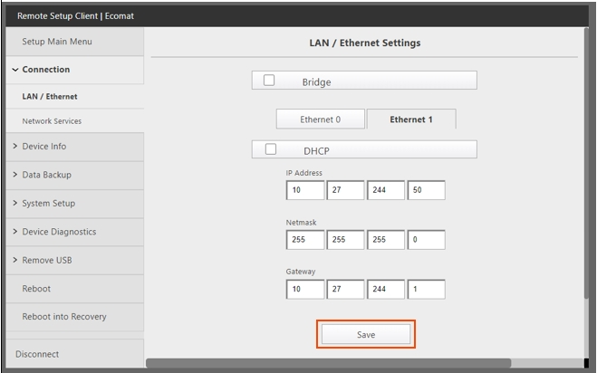
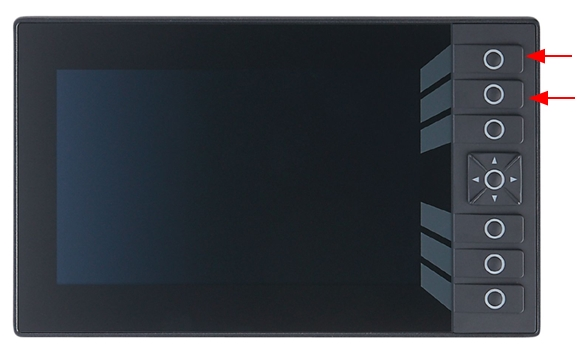
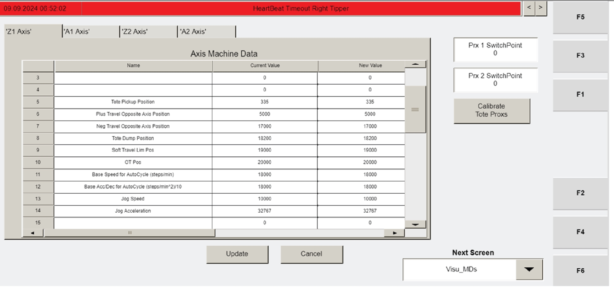

| Procedure ID | proc_load_new_tipper_firmware_v1 |
|---|---|
| Title | Load New Tipper Firmware via Tipper HMI (VISU) USB Install |
| Procedure Type | recovery |
| Primary Role | operator |
| Support Safe | Yes |
| Capability Tags | tipper_station_fault |
| Access Surface | tipper_hmi |
| Audience Roles | operator |
| Failure Pattern Tags | None |
| Validation Status | needs_sme_review |
| Merge Status | source_finalized |
Update the tipper controller firmware using the Tipper HMI (VISU) USB install flow, then power-cycle the controller and confirm the HMI returns to the expected default screen state ("Visu_Default" with IP and subnet mask settings) and that F3 navigates to "Visu_MCP_Dual".
Use when you need to load new firmware onto a tipper controller using the HMI USB install flow and then verify the HMI returns to the expected default screen state.



Responsible role: operator
Instruction:
Turn off power to the tipper using the disconnect.
Expected result:
The tipper controller is powered off (HMI is not in normal operation).
Responsible role: operator
Instruction:
On the tipper HMI, press and hold the top three buttons.
Expected result:
The top three buttons are held continuously in preparation for powering on.
Responsible role: operator
Instruction:
While continuing to hold the top three buttons, power on the tipper.
Expected result:
The controller begins booting into the firmware-load mode.
Stop or Escalate If:
Responsible role: operator
Instruction:
Keep holding the buttons until a gray screen appears.
Expected result:
A gray screen appears on the tipper HMI.
Stop or Escalate If:
Responsible role: operator
Instruction:
Plug the USB drive containing the new firmware version into the USB dongle on the HMI.
Expected result:
The USB drive is physically connected to the HMI USB dongle.
Responsible role: operator
Instruction:
Press the "INSTALL FROM FILE" button.
Expected result:
The HMI begins the firmware install flow from the USB.
Responsible role: operator
Instruction:
Load the firmware from the USB (continue the on-screen install flow until it completes).
Expected result:
The on-screen install flow reaches completion.
Responsible role: operator
Instruction:
Power the controller off and back on, then allow it to boot normally without pressing any buttons.
Expected result:
Controller reboots normally without entering the firmware-load mode.
Responsible role: operator
Instruction:
Verify the "Visu_Default" screen appears on the HMI displaying the IP and subnet mask settings.
Expected result:
The HMI shows the "Visu_Default" screen and displays IP and subnet mask fields.
Stop or Escalate If:
Responsible role: operator
Instruction:
Press F3 to go to the "Visu_MCP_Dual" screen.
Expected result:
The HMI displays the "Visu_MCP_Dual" screen after pressing F3.